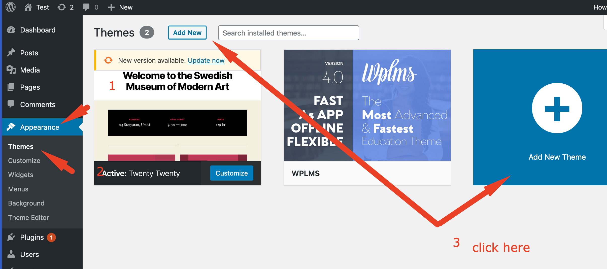

Installation
WPLMS version 4.
- Installing on a fresh WordPress Setup
- Installing on a existing WordPress site
- Installing on a existing WPLMS site
- Upgrading from 3.x version
Installing WPLMS on a Fresh WordPress site.
Installing WPLMS requires a working WordPress site. So, first you need to setup WordPress on your server. You can refer this link on how to setup WordPress on your server.
What is a Fresh WordPress site ? A Fresh WordPress site is a WordPress site with no content inside it. A fresh wordpress site will have 1 page with title Sample Page, 1 post with title Hello world !.
Hosting Requirements and Recommendations for the WPLMS Theme
The WPLMS is an advanced WordPress theme. It provides a complete framework for building educational sites, so comparing WPLMS with any other regular WordPress theme is like comparing apples to oranges.
WPLMS uses popuplar plugins maintained by the WordPress core team like the BuddyPress, WooCommerce and BBPress.
Out of these only BuddyPress is the required plugin. If you need to sell courses you will be required to install WooCommerce. If you need Discussion forums in your site, you will need to install BBPress.
The Hosting recommendations posted by these plugins are the basis for WPLMS Hosting recommendations as well.
- PHP Version 7.2.1 [tested upto version 7.4.8 as of 20th August 2020]
- Mysql/MariaDb Version 5.6+/10.1+
- Upload Limit 10 MB or more
- PHP Memory Execution Limit 128 MB or more
- PHP Time Limit 128 MB or more
- PHP Post Max Size 128 MB or more
- PHP Max Input Vars 128 MB or more
-
PHP extensions required
dom,gmagick,SimpleXML,ssh2,xml,
xmlreader,curl,date,exif,filter,ftp,gd,hash,iconv,imagick,json,libxml,
openssl,pcre,posix,sockets,SPL,tokenizerz,lib,mbstring,mysqli.
As a principle we are not affiliated to any hosting company. So the recommendations posted here are unbiased and based on feedback we collected from our users.
Although any hosting plan should work for WPLMS. A VPS or above plan provides better compatibility and lesser issues in the long run. Sharing hosting with everything unlimited usually do not work out good because the server is shared among many entities. From our observation : WPEngine, HostGator, KnownHost, OVH, DigitalOcean and SiteGround are good hosting providers. This list by no means is an exhaustive list, you are free to try other options and if they work great you can help us in updating this list. Just send out an email here
Uploading the theme
Uploading the WPLMS theme is just like any other theme. Following are the steps you can follow to upload the theme.
Downloading the theme
Download the WPLMS WordPress theme from your Themeforest Account.
Log in to your WordPress Admin [a.k.a WP Admin]Login to your WordPress administration panel. You can simply append wp-admin to your site's url. So if your site is ABC.com , ABC.com/wp-admin is your WP Admin area.
 Go to Apperance - Themes - Upload
Go to Apperance - Themes - Upload
Locate the Apperance in the left menu. Click on it, locate the themes sub-menu item, click on it. Locate the Add new button on your screen.
 Upload the ThemeClick on Upload Theme button. A Upload form will appear. Drag and drop the theme downloaded in the previous step here. Click on Install Button

If you see the below error while uploading the theme, it most likely means that your server is restricting the upload.
The possible reasons for above are :
The best course of action